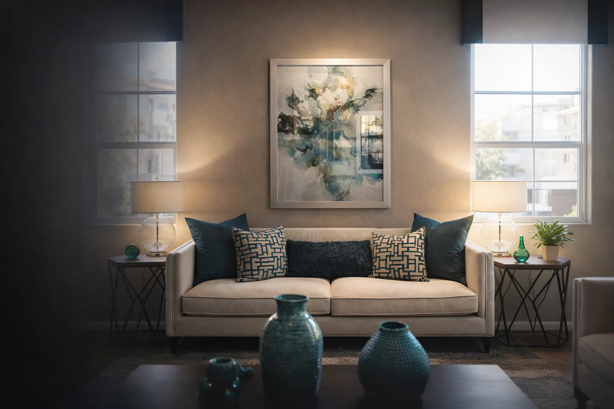
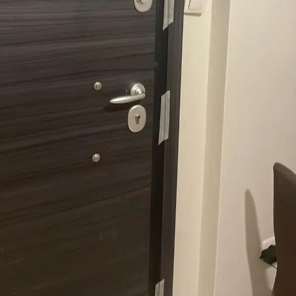

Γκρεμίσματα / αποξηλώσεις
Προχωράμε σε ελεγχόμενες αποξηλώσεις και απομακρύνσεις παλαιών υλικών, ώστε να δημιουργηθεί η σωστή βάση για τη νέα διαρρύθμιση και την ασφαλή εξέλιξη της ανακαίνισης.

Η FM Renovation αναλαμβάνει πλήρεις ανακαινίσεις κατοικιών στην Αθήνα και όλη την Αττική, με οργανωμένη διαχείριση έργου, εξειδικευμένα συνεργεία και υλικά που αναβαθμίζουν την αισθητική, τη λειτουργικότητα και την αξία του ακινήτου σας.
Η FM Renovation αναλαμβάνει την ολική ανακαίνιση κατοικίας στην Αθήνα και σε όλη την Αττική, συνδυάζοντας τεχνική εμπειρία, προσεκτικό προγραμματισμό και ποιοτικά υλικά. Σχεδιάζουμε κάθε έργο ώστε να προχωρά με συνέπεια, σαφή κοστολόγηση και σωστό συντονισμό όλων των εργασιών.
Είτε πρόκειται για παλαιό διαμέρισμα στο κέντρο είτε για κατοικία στα νότια ή βόρεια προάστια, οργανώνουμε την ανακαίνιση σπιτιού στην Αθήνα ως μία ολοκληρωμένη διαδικασία, από την πρώτη αποτύπωση έως την τελική παράδοση, χωρίς να αντιμετωπίζουμε τις επιμέρους εργασίες σαν ασύνδετες μικρές παρεμβάσεις.
Αντιμετωπίζουμε την ολική ανακαίνιση κατοικίας ως ενιαίο έργο, όπου κάθε τεχνική και αισθητική παρέμβαση συνδέεται με το συνολικό αποτέλεσμα του σπιτιού.
Προχωράμε σε ελεγχόμενες αποξηλώσεις και απομακρύνσεις παλαιών υλικών, ώστε να δημιουργηθεί η σωστή βάση για τη νέα διαρρύθμιση και την ασφαλή εξέλιξη της ανακαίνισης.
Αναβαθμίζουμε δίκτυα και παροχές σε κουζίνα, μπάνιο και βοηθητικούς χώρους, εντάσσοντας τις υδραυλικές λύσεις στο συνολικό πλάνο της κατοικίας.
Σχεδιάζουμε νέες γραμμές, πίνακες, φωτισμό και σημεία χρήσης, ώστε το σπίτι να εξυπηρετεί σύγχρονες ανάγκες με ασφάλεια και λειτουργικότητα.
Τοποθετούμε νέα δάπεδα και πλακίδια που δένουν αισθητικά με το σύνολο της ανακαίνισης και προσφέρουν αντοχή στην καθημερινή χρήση.
Ολοκληρώνουμε το έργο με προσεγμένα φινιρίσματα, σωστή προεργασία και τελικά χρώματα που αναδεικνύουν το νέο ύφος του χώρου.
Ενσωματώνουμε κομβικές αναβαθμίσεις σε κουζίνα, μπάνιο και κουφώματα ως μέρος της πλήρους μεταμόρφωσης της κατοικίας και όχι σαν μεμονωμένες εργασίες.
Δίνουμε έμφαση στην ποιότητα, στον συντονισμό των συνεργείων και στη συνέπεια που χρειάζεται μια σοβαρή ανακαίνιση σπιτιού στην Αθήνα.
Επιλέγουμε υλικά και συστήματα που ανταποκρίνονται στις απαιτήσεις ενός σύγχρονου έργου, με έμφαση στην αντοχή, την αισθητική και την αξιοπιστία.
Κάθε στάδιο της ολικής ανακαίνισης υλοποιείται από κατάλληλα συνεργεία που λειτουργούν συντονισμένα μέσα στο ίδιο project plan.
Ορίζουμε σαφή βήματα και παρακολουθούμε την πρόοδο του έργου ώστε να διατηρείται έλεγχος σε χρόνο, ποιότητα και παραδοτέα.
Αναλαμβάνουμε έργα σε κεντρικές και περιφερειακές περιοχές, με προσαρμογή στις πρακτικές ανάγκες κάθε κατοικίας.
Η FM Renovation εξυπηρετεί ιδιοκτήτες που αναζητούν ολική ανακαίνιση κατοικίας στην Αθήνα, αλλά και σε όλη την Αττική, με οργανωμένη διαδικασία και αξιόπιστη παρακολούθηση έργου. Καλύπτουμε περιοχές με διαφορετικές κατασκευαστικές απαιτήσεις, από παλαιότερα διαμερίσματα έως πιο σύγχρονες κατοικίες.
Αν χρειάζεστε ανακαίνιση σπιτιού στην Αθήνα ή πλήρη αναβάθμιση κατοικίας σε γειτονιές της πόλης και των προαστίων, μπορούμε να οργανώσουμε το έργο σας με συνέπεια, σαφή προσφορά και ποιοτικό τελικό αποτέλεσμα.
Κάθε ολική ανακαίνιση ακολουθεί συγκεκριμένα στάδια, ώστε να υπάρχει σαφήνεια, σωστή κοστολόγηση και έλεγχος σε κάθε φάση του έργου.
Λαμβάνουμε το αίτημά σας και συζητάμε τον τύπο κατοικίας, τις ανάγκες σας και τον στόχο της ανακαίνισης.
Επισκεπτόμαστε τον χώρο για πλήρη αποτύπωση, τεχνικό έλεγχο και καταγραφή όλων των απαιτήσεων του έργου.
Σας παρουσιάζουμε δομημένη προσφορά με εργασίες, υλικά, στάδια υλοποίησης και εκτιμώμενο χρονοδιάγραμμα.
Συντονίζουμε όλα τα συνεργεία και επιβλέπουμε την εξέλιξη της ανακαίνισης ώστε να διατηρείται η ποιότητα και η συνέπεια.
Παραδίδουμε την κατοικία ολοκληρωμένη, λειτουργική και έτοιμη για άμεση χρήση, με προσοχή στη λεπτομέρεια.
Αν θέλετε να δείτε πώς προσεγγίζουμε στην πράξη μια ανακαίνιση κατοικίας στην Αθήνα και την Αττική, περιηγηθείτε στη σελίδα με τα έργα μας και δείτε εικόνες από ολοκληρωμένες παρεμβάσεις.

Η διάρκεια εξαρτάται από τα τετραγωνικά, την υφιστάμενη κατάσταση του ακινήτου και το εύρος των παρεμβάσεων. Μετά την αυτοψία μπορούμε να δώσουμε σαφές και ρεαλιστικό χρονοδιάγραμμα.
Η προσφορά προκύπτει μετά από επικοινωνία, αυτοψία και αναλυτική καταγραφή αναγκών, ώστε να κοστολογηθούν σωστά οι εργασίες, τα υλικά και οι τεχνικές απαιτήσεις του έργου.
Ναι, αναλαμβάνουμε τόσο μικρότερα διαμερίσματα όσο και μεγαλύτερες κατοικίες, οργανώνοντας την ολική ανακαίνιση ανάλογα με τη χρήση, τις ανάγκες και τον στόχο κάθε ιδιοκτήτη.
Βεβαίως. Εξυπηρετούμε έργα σε Αθήνα, Πειραιά, Γλυφάδα, Νέα Σμύρνη, Κηφισιά, Μαρούσι, Χαλάνδρι, Περιστέρι και σε ακόμη περισσότερες περιοχές της Αττικής.
Ναι, μπορείτε να επικοινωνήσετε μαζί μας μέσω της σελίδας επικοινωνίας για μια δωρεάν πρώτη εκτίμηση και προγραμματισμό αυτοψίας.
Αν σχεδιάζετε ολική ανακαίνιση κατοικίας στην Αθήνα ή σε οποιαδήποτε περιοχή της Αττικής, η ομάδα της FM Renovation είναι έτοιμη να οργανώσει το έργο σας με επαγγελματισμό, συνέπεια και δωρεάν αρχική εκτίμηση.